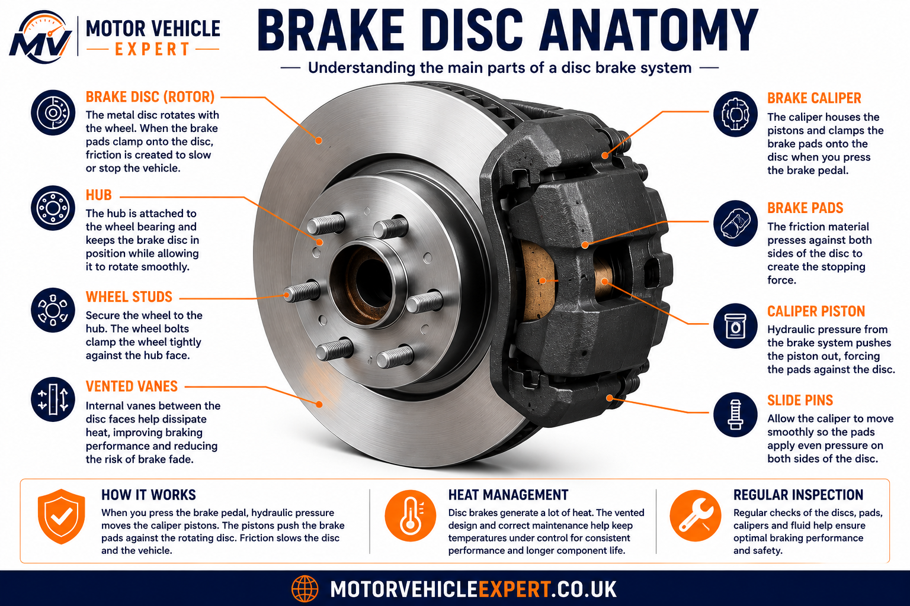
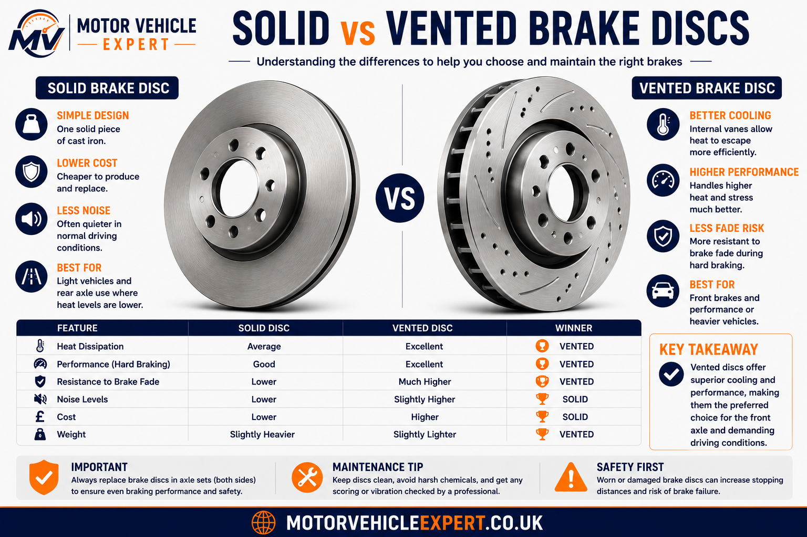
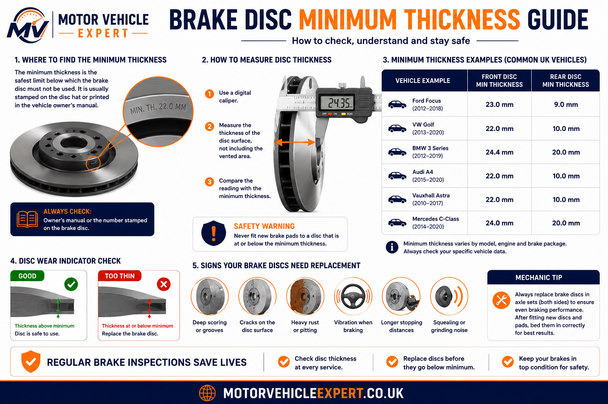

What are brake discs?
Brake discs are metal rotors fixed to the wheel hub. When you press the brake pedal, the brake caliper pushes the brake pads against both faces of the disc. The friction between the pads and disc slows the wheel and converts vehicle movement into heat.
What do they do?
Brake discs provide the rotating friction surface that the brake pads clamp onto during braking.
What wears out?
Discs gradually wear thinner and can also suffer scoring, corrosion, cracking, overheating and vibration.
What is urgent?
Grinding, cracks, heavy corrosion, severe vibration or discs below minimum thickness need prompt attention.
Brake discs should never be judged by appearance alone. A disc can look acceptable but still be below minimum thickness, uneven, heat damaged or causing brake judder. Proper inspection means measuring the disc and checking both faces.
Brake disc anatomy explained
A brake disc is more than a flat metal plate. It has a hub mounting area, braking faces, cooling surfaces and a minimum thickness specification. Vented discs also have internal cooling vanes between the two friction faces to help remove heat during repeated braking.
Friction Faces
These are the two surfaces that the brake pads press against. They must remain smooth, clean and above minimum thickness.
Hub Mounting Face
This section sits against the wheel hub. Rust or dirt trapped behind it can cause disc run-out and vibration.
Cooling Vanes
Vented discs use internal vanes to move air through the disc and reduce overheating during heavy braking.

Understanding the anatomy helps explain why disc thickness, hub cleanliness, caliper movement and pad contact all affect braking performance.
How Brake Discs Work
Brake discs work by converting the vehicle's kinetic energy into heat. When you press the brake pedal, hydraulic pressure forces the brake caliper pistons outward, clamping the brake pads against both sides of the rotating brake disc. The friction created slows the wheel until the vehicle stops.
Modern braking systems are carefully engineered to deliver predictable stopping power in all weather conditions. As temperatures rise during braking, the brake discs must absorb and dissipate large amounts of heat while maintaining a flat, stable braking surface.
Brake Pedal
Driver input creates hydraulic pressure inside the braking system.
Brake Caliper
Hydraulic pistons force the brake pads evenly against both sides of the brake disc.
Brake Disc
Converts movement into heat through friction before cooling as the vehicle continues moving.
Every time you brake, temperatures can exceed several hundred degrees Celsius. Brake discs are designed to absorb this heat without cracking, warping or losing braking efficiency. Poor-quality discs or overheating can lead to brake fade, vibration and longer stopping distances.
Solid vs Vented Brake Discs
Most modern vehicles use vented brake discs on the front axle because front brakes perform around 70% of the vehicle's braking. Rear brakes often use solid discs on lighter vehicles, although many SUVs, electric vehicles and performance cars now use vented discs all round.

Solid Brake Discs
Solid brake discs are a single piece of cast iron. They are simple, durable and inexpensive, making them suitable for many rear braking systems and lighter vehicles.
- ✓Lower purchase cost
- ✓Simple construction
- ✓Reliable for normal driving
- ✓Common on rear axles
Vented Brake Discs
Vented discs contain internal cooling vanes that pump air through the rotor while driving. This improves heat dissipation, reduces brake fade and maintains more consistent braking under demanding conditions.
- ✓Superior cooling
- ✓Reduced brake fade
- ✓Ideal for heavier vehicles
- ✓Most common on front axles
Drilled and Slotted Brake Discs Explained
Performance brake discs often feature drilled holes, machined slots or a combination of both. These designs improve cooling, help remove water and brake dust and can maintain more consistent braking during repeated heavy use.
Drilled Discs
Small holes increase airflow and improve wet-weather braking but may wear slightly faster under extreme track conditions.
Slotted Discs
Machined grooves continuously clean the brake pad surface and remove gases produced during heavy braking.
Drilled & Slotted
Combines the benefits of both designs and is commonly fitted to sports cars and high-performance road vehicles.
Cross-drilled or slotted discs rarely reduce normal stopping distances on everyday roads. Their biggest advantage is maintaining braking performance during repeated heavy braking by managing heat more effectively.
Brake Disc Wear Patterns Explained
Brake discs rarely wear perfectly evenly throughout their life. Every braking event removes a microscopic amount of material from the friction surface, gradually reducing disc thickness. Heat, corrosion, driving style and caliper condition all influence how the braking surface wears. Understanding common wear patterns helps identify problems before braking performance or MOT compliance is affected.

Scoring
Deep grooves usually develop when worn brake pads, trapped debris or damaged friction material cuts into the braking surface.
Outer Lip
A raised lip forms as the braking surface wears thinner while the outer edge remains largely untouched. Excessive lips usually indicate the disc is approaching its wear limit.
Surface Corrosion
Light rust commonly appears after rain or overnight parking and usually disappears after several brake applications.
Heat Spots
Blue or dark patches indicate excessive temperatures which may cause brake judder, reduced friction and disc distortion.
Cracks
Any visible cracking across the braking surface requires immediate professional inspection and normally replacement.
Uneven Contact
Patchy wear often indicates seized caliper slide pins, sticking pistons or uneven brake pad contact.
Uneven wear is rarely caused by the brake disc alone. Sticking calipers, seized guide pins, contaminated brake pads, worn suspension components or incorrect wheel bearing adjustment can all affect how evenly the brake pads contact the disc. Replacing the discs without correcting the underlying fault often results in the same problem returning.
Never replace brake discs because of light surface rust alone. The important checks are minimum thickness, deep scoring, excessive corrosion within the braking area, cracking, heat damage and brake pedal vibration during braking.
Brake Disc Minimum Thickness Guide
Every brake disc has a manufacturer-specified minimum thickness stamped onto the disc hub or published in the workshop manual. Once the disc wears below this limit it no longer has sufficient strength or heat capacity to operate safely and must be replaced.

Minimum thickness values vary between vehicles and brake disc manufacturers. Never assume one measurement applies to every vehicle. Always use the manufacturer's specification when inspecting brake discs.
Measure Both Sides
Disc wear can vary around the braking surface. Mechanics take several measurements before deciding whether replacement is required.
Replace in Axle Pairs
Brake discs should normally be replaced in pairs to maintain balanced braking performance across the axle.
Always Fit New Pads
New brake discs should be installed together with new brake pads to ensure even bedding-in and maximum braking performance.
Common Brake Disc Warning Signs
Brake discs usually show warning signs long before they become unsafe. Recognising these symptoms early can reduce repair costs, improve braking performance and help prevent MOT failures. Some symptoms are caused by normal wear, while others may indicate problems with the caliper, suspension or wheel bearings.
Brake Judder
Vibration through the steering wheel or brake pedal often indicates uneven disc thickness, excessive run-out or heat damage.
Grinding Noise
Grinding usually means the brake pads have worn completely or severe scoring has developed on the disc surface.
Squealing
High-pitched squealing commonly occurs when brake pad wear indicators contact the brake disc or when pads become glazed.
Visible Scoring
Deep grooves reduce braking efficiency and often indicate damaged brake pads or trapped debris.
Heavy Corrosion
Rust covering the braking surface after driving may indicate poor pad contact or seized caliper components.
Pulling While Braking
Uneven braking may be caused by seized calipers, contaminated brake pads or suspension faults rather than the discs alone.
Brake pedal pulsation, steering wheel vibration or grinding noises should never be ignored. Continued driving may damage brake pads, calipers and wheel bearings while increasing stopping distances.
How Long Do Brake Discs Last?
Brake discs normally last much longer than brake pads because they wear more slowly. Actual lifespan depends on driving style, vehicle weight, towing, road conditions, corrosion and the quality of the brake components fitted.
Most standard passenger vehicles require brake disc replacement somewhere between 50,000 and 120,000 miles, although many vehicles exceed this with careful driving and regular servicing.
Mostly Motorway
80,000–120,000 milesGentle braking and lower operating temperatures produce the slowest disc wear.
Mixed UK Driving
60,000–90,000 milesMost UK vehicles replace their brake discs within this mileage range.
Urban Driving
50,000–70,000 milesFrequent braking generates additional heat and increases brake disc wear.
Towing & Heavy Loads
40,000–70,000 milesHeavy vehicles place greater thermal loads on the braking system during every stop.
Performance Driving
25,000–50,000 milesRepeated heavy braking dramatically increases temperatures and accelerates brake disc wear.
Brake discs should always be measured rather than replaced purely because of mileage. Many discs remain safely within specification for years, while others wear much faster depending on driving conditions.
What Causes Brake Discs To Wear Faster?
Driving style is only one factor affecting brake disc life. Heat, corrosion, poor-quality components and braking system faults all influence how quickly brake discs wear.
Heavy Braking
Frequent high-speed braking creates extreme temperatures that increase brake disc wear.
Vehicle Weight
SUVs, electric vehicles and vehicles used for towing place much greater loads on brake discs.
Corrosion
Salt, moisture and long periods of standing accelerate corrosion around the braking surfaces.
Seized Calipers
Brake pads remaining in contact with the disc cause overheating and uneven wear.
Poor Quality Parts
Low-quality brake discs may wear faster and be more prone to heat damage.
Incorrect Installation
Dirt behind the disc or incorrect wheel bolt torque can lead to vibration and uneven wear.
Bedding-In New Brake Discs and Brake Pads
Whenever new brake discs are fitted they should normally be installed together with new brake pads. Both components need time to bed together so the friction surfaces match perfectly. Correct bedding-in improves braking performance, reduces the risk of brake judder and helps maximise the service life of both the brake discs and pads.
During the first few hundred miles a thin transfer layer of brake pad material is gradually deposited across the braking surface. This creates consistent friction and allows the braking system to perform as designed. Heavy braking before this process is complete can cause uneven deposits, vibration and premature brake wear.
Step 1
Normal DrivingDrive normally for the first few journeys while avoiding unnecessary heavy braking whenever possible.
Step 2
Progressive StopsCarry out several gentle to moderate stops from normal road speeds, allowing the brakes to cool between each application.
Step 3
Cooling TimeContinue driving after each braking event so airflow can cool the brake discs evenly.
Common Mistakes
- ✕Emergency braking immediately after fitting.
- ✕Holding the brake pedal firmly after a hard stop.
- ✕Repeated heavy braking without cooling.
- ✕Reusing worn brake pads on new brake discs.
When Full Performance Is Reached
Most standard road vehicles achieve normal braking performance after approximately 150–300 miles (240–480 km). Premium performance brake compounds may require a longer bedding-in period.
Unless required for safety, avoid repeated heavy braking during the bedding-in period. Excessive heat before the friction surfaces have fully matched can shorten brake disc life and increase the likelihood of vibration or brake noise later.
New brake discs should always be fitted with new brake pads. Installing old pads onto new discs often causes uneven wear, reduced braking efficiency and premature brake judder.
Can Brake Discs Be Resurfaced or Skimmed?
Brake disc resurfacing, also called skimming, removes a thin layer of metal from the disc surface to correct light scoring, minor unevenness or brake judder. It can sometimes restore a smoother braking surface, but it is only suitable when the disc remains safely above the manufacturer's minimum thickness after machining.
Resurfacing May Be Possible If...
- ✓The disc is still above minimum thickness.
- ✓Scoring is light or moderate.
- ✓There are no cracks or deep heat spots.
- ✓The hub and caliper are in good condition.
Replacement Is Safer If...
- ✓The disc is close to minimum thickness.
- ✓The disc is cracked or heavily corroded.
- ✓There is severe brake judder.
- ✓The disc has deep scoring or overheating damage.
Modern brake discs are often relatively affordable compared with labour time. By the time a disc is removed, measured, resurfaced and refitted, replacement is often the safer and more cost-effective option. Many manufacturers also prefer replacement where thickness, corrosion or heat damage is close to the limit.
Disc Skimming
£40–£90 per axleUseful for light surface correction when discs remain safely within specification.
New Front Discs & Pads
£220–£500Usually the better option when discs are worn, scored, corroded or near minimum thickness.
Premium Vehicles
£350–£900+Performance discs may make resurfacing tempting, but thickness and safety limits still matter.
Never skim a brake disc without measuring it first. If machining would leave the disc close to or below minimum thickness, replacement is the correct repair.
What Mechanics Check During a Brake Disc Inspection
Professional brake inspections involve far more than simply looking through the alloy wheels. Mechanics measure brake disc thickness, inspect both braking surfaces and check the entire braking system to identify faults that may affect braking performance or MOT compliance.
Disc Thickness
Measured using a brake disc micrometer to confirm the rotor remains above the manufacturer's minimum specification.
Run-Out
Excessive lateral movement is checked using a dial gauge because run-out can cause brake pedal pulsation.
Surface Condition
Mechanics inspect for deep scoring, corrosion, cracks, overheating, heat spots and uneven wear.
Brake Pads
Both inner and outer brake pads are inspected for even wear, glazing and contamination.
Brake Calipers
Slide pins, pistons and pad movement are checked to ensure the brake discs wear evenly.
Brake Fluid
Hydraulic leaks and brake fluid condition are inspected because they directly affect braking performance.
If new brake discs wear unevenly within a short period, the fault is often elsewhere in the braking system. Correct diagnosis prevents unnecessary replacement of otherwise serviceable brake discs.
Brake Discs and the MOT Test
Brake discs form part of one of the most important safety inspections during the MOT test. Testers examine braking performance using calibrated roller brake testers and visually inspect brake discs for wear, damage and corrosion that could affect safe braking.
Brake Efficiency
The MOT brake tester measures braking force on each wheel and checks braking balance across the axle.
Visual Inspection
Brake discs are inspected for excessive scoring, cracking, serious corrosion and any condition likely to affect braking efficiency.
Associated Components
Brake pads, calipers, brake pipes, flexible hoses and warning lights are also checked as part of the braking system inspection.
Brake discs that are excessively worn, cracked, insecure or significantly weakened by corrosion are likely to result in an MOT failure. Minor surface rust after standing is usually not a reason for failure if braking performance remains satisfactory.
Typical UK Brake Disc Replacement Costs
Brake disc replacement costs depend on vehicle size, disc quality, axle position, labour rates and whether the brake pads, wear sensors or calipers also need attention. Brake discs should normally be replaced in axle pairs to keep braking balanced.
Front Brake Discs & Pads
£220–£500Front discs usually cost more because they are larger and handle most of the braking force.
Rear Brake Discs & Pads
£180–£420Rear discs may be cheaper, but electronic parking brakes can increase labour time on some vehicles.
Premium Vehicles
£350–£900+SUVs, performance cars and larger vehicles often use bigger vented, drilled or specialist brake discs.
Brake Pad Wear Sensor
£20–£80Some vehicles require new wear sensors when discs and pads are replaced.
Caliper Service
£60–£180+Slide pins, carriers and pistons may need cleaning or repair if uneven disc wear is found.
Brake Fluid Change
£60–£120Old brake fluid should be replaced on schedule to protect hydraulic braking performance.
If a garage recommends new brake discs, ask whether the discs are below minimum thickness, heavily scored, cracked, corroded or causing brake judder. This helps confirm whether replacement is necessary rather than simply recommended.
Checking Brake Discs Before Buying a Used Car
Brake disc condition is a useful clue when assessing a used car. Worn brake discs are normal on older vehicles, but heavy corrosion, grinding, brake judder, warning lights or repeated MOT brake advisories should affect your offer.
Walk Away If...
- ✓The brakes grind during the test drive.
- ✓The brake pedal pulses heavily.
- ✓The car pulls strongly when braking.
- ✓Brake warning lights stay on.
Negotiate If...
- ✓Brake discs are lipped or scored.
- ✓The MOT history shows brake advisories.
- ✓Brake pads and discs are near replacement.
- ✓Brake fluid service is overdue.
Good Signs
- ✓Smooth braking with no vibration.
- ✓No heavy scoring or corrosion.
- ✓Even wear across both sides.
- ✓Recent brake service invoice.
A car with worn brake discs is not automatically a bad purchase, but the repair cost should be reflected in the price. Use MOT advisories, test-drive symptoms and service invoices as negotiation evidence.
Brake Disc FAQs
How often should brake discs be replaced?
There is no fixed replacement interval. Most brake discs last between 50,000 and 120,000 miles depending on driving style, vehicle weight and maintenance. They should always be measured against the manufacturer's minimum thickness rather than replaced based on mileage alone.
Can I replace brake pads without replacing the discs?
Yes, provided the brake discs remain above minimum thickness and are free from heavy scoring, cracks, excessive corrosion and vibration. If the discs are worn or damaged, both discs and pads should be replaced together.
Can worn brake discs fail an MOT?
Yes. Brake discs that are excessively worn, cracked, insecure or seriously weakened by corrosion are likely to result in an MOT failure because they reduce braking safety.
Should brake discs always be replaced in pairs?
Yes. Replacing both brake discs on the same axle helps maintain balanced braking performance and reduces the likelihood of uneven braking or brake pull.
How can I tell if my brake discs are worn out?
Common warning signs include brake judder, grinding noises, deep scoring, heavy corrosion, excessive lips around the disc edge and brake discs measuring below the manufacturer's minimum thickness.
What causes brake discs to warp?
True brake disc warping is uncommon. Brake vibration is more often caused by uneven disc thickness, brake pad deposits, overheating, incorrect installation or excessive disc run-out.
Explore the Complete Braking System Knowledge Centre
Brake discs work together with brake pads, calipers, hydraulic braking components and electronic safety systems to provide safe, reliable stopping performance. Continue exploring our complete UK braking guides covering brake components, ABS, MOT inspections, repair costs and driver safety advice.
Brake Components
Hydraulic Braking
Electronic Braking & Warning Lights
MOT & Brake Safety
Brake Repair Costs
Driver Inspection & Safety Guides
Final Thoughts
Brake discs are one of the most important safety components fitted to any vehicle. Although they wear gradually over many thousands of miles, ignoring warning signs such as vibration, grinding, heavy corrosion or excessive scoring can increase repair costs and reduce braking performance.
Regular inspections, quality replacement parts and replacing brake discs together with new brake pads help maintain reliable braking, reduce MOT failures and improve long-term vehicle safety.
Measure brake discs rather than guessing their condition. If discs are below minimum thickness, cracked, heavily scored or causing brake judder, replacement should not be delayed.
About This Guide
This guide forms part of the Motor Vehicle Expert braking system knowledge base. Every article is written to help UK drivers understand vehicle safety, repair decisions, MOT requirements and maintenance using practical workshop knowledge and manufacturer guidance.